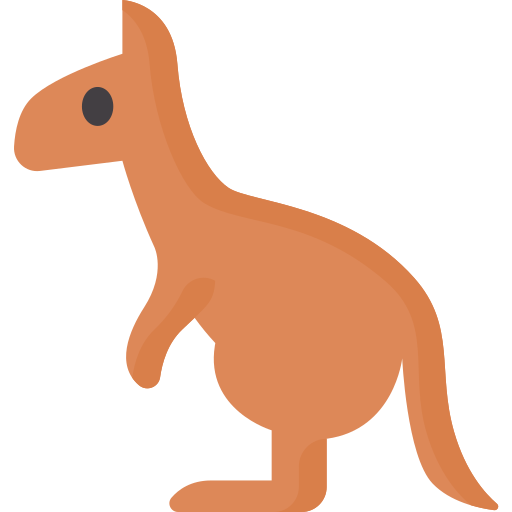

AUSTRALIA
Rottnest Island
Australia
Africa
Malaysia
Bucket list

PHOTO
ANIMAL
ENJOY
QUARK
쿼카
몸무게 : 2.5~5kg
크기 : 40-90cm
꼬리길이 : 25-30cm
로트네스 아일랜드는 세계에서 가장 사진을 잘 받는 동물인 쿼카의 서식지로 널리 알려져 있습니다.
쿼카는 본토의 작은 서식지를 제외하면 지구 상의 어디에서도 살지 않습니다.
사람을 두려워하지 않아서 종종 방문객 바로 곁에까지 오기도 합니다.
하지만 쿼카를 만지거나 먹이를 주는 행동은 불법이니 적정 거리를 유지해야 하며 멋진 사진을 위해서는 셀카봉을 이용해 주세요.